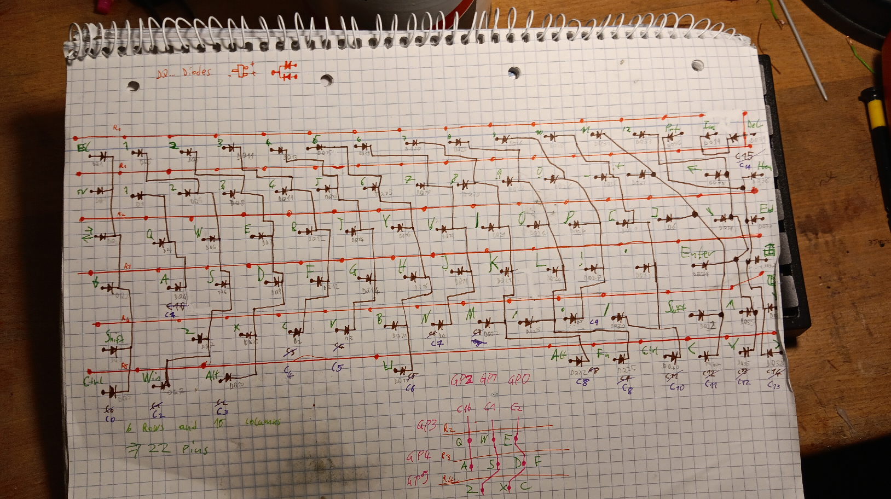
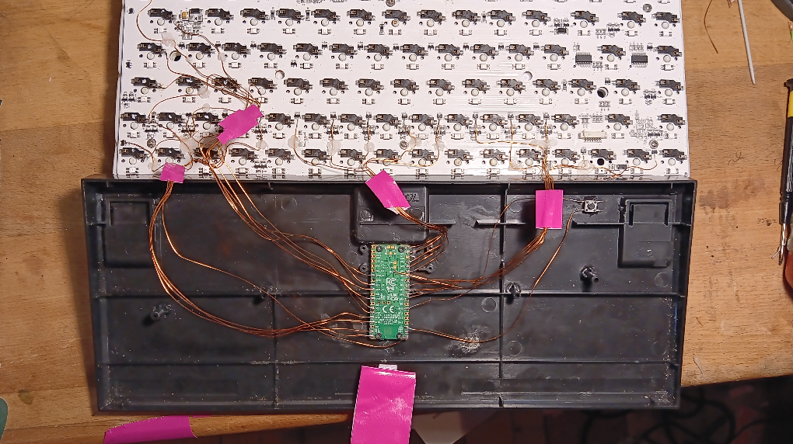

Some time in 2024 my mechanical keyboard, the EP84 with Gateron Yellows broke. The fault was the microcontroller on the PCB, which was defective.
As a result I ordered the Pi Pico W microcontroller and looked into using the Tiny-USB library for the Pi to write a custom controller.
This microcontroller has many interesting features, like being able to act as any USB device (USB hub, mouse, storage, etc), being able to use bluetooth and WiFi, while also being able to read or write electrical signals.
In order to read the actual inputs of the mechanical switches most keyboards use a matrix, which is scanned by the microcontroller periodically to detect the keys pressed by the user. This is done to reduce the amount of connections needed from the switches to the microcontroller.
Scanning keys in a matrix introduces a problem called ghosting, which is adding diodes to the schematic. This website explains the details very well: https://pcbheaven.com/wikipages/How_Key_Matrices_Works/
A schematic was created in order to know how to wire up the controller to the EP84's PCB.
Note: The numbering and the key order of the last column is off, however the matrix is correct otherwise.

Red R0 = Top row
Purple C0 = Left column
Pencil = Component label on the PCB
Enameled copper wire was used to solder from the PCB onto the controller. Sandpaper was used to remove the isolation.
The boot select button, which is used to load the program onto the Pi, is located under the print screen switch.
The Pi was mounted by gluing four plastic pieces onto the base of the keyboard case. These were then drilled into, to screw the Pi into place.
The resulting project contains the following features: